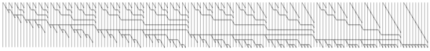

Parallel Computing
I got interested in parallel computing in 1980 in Australia
by working with Les Goldschlager. I carried that interest into my PhD thesis
and on into the 1990s.
Parallel Prefix (2006)

M. Sheeran and
I. Parberry,
"A new approach to the design of optimal parallel prefix circuits".
Technical Report No. 2006:1,
Department of Computer Science and Engineering,
Chalmers University of Technology,
Göteborg, Sweden, 2006.
[pdf]
Abstract
Parallel prefix is one of the fundamental algorithms in computer science. Parallel prefix
networks are used to compute carries in fast addition circuits, and have a number of other
applications, including the computation of linear recurrences and loop parallelization. A new
construction, called Slices, for fan-out-constrained depth size optimal (DSO) parallel prefix
circuits is presented. The construction encompasses the largest possible number of inputs for
given depth and fan-out. The construction improves on previous approaches that produce
DSO networks with constrained fan-out by encompassing more inputs for a given depth.
Even when compared with parallel prefix circuits with unbounded fan-out, the construction
provides a new family of circuits that are both small and reasonably shallow. We present the
construction, which is composed of recursively designed blocks, and derive a recurrence for the
maximum number of inputs that can be processed for a given fan-out and depth. We also
show how a DSO network built according to our construction can be cropped, to produce a
new DSO network with the same depth and fan-out, but fewer inputs. Thus, we can produce
a DSO network for given depth, fan-out and number of inputs, provided such a network exists.
We believe that we are the first to be able to do this. The resulting networks are compared
to others with both bounded and unbounded fan-out.
Author's Comments
Mary visited me in Texas in 2005, during which time she managed to reinfect me with an interest in parallel prefix circuits.
This never got beyond the Tech Report version, but it surprised us by garnering a
significant
number of citations
.
Load Sharing (1995)

I. Parberry,
"Load Sharing with Parallel Priority Queues".
Journal of Computer and System Sciences,
Vol. 50, No. 1, pp. 64-73, 1995.
[pdf]
Abstract
For maximum efficiency in a multiprocessor system the load should be shared evenly over all
processors, that is, there should be no idle processors when tasks are available. The delay in a
load sharing algorithm is the larger of the maximum time that any processor can be idle before
a task is assigned to it, and the maximum time that it must wait to be relieved of an excess task.
A simple parallel priority queue architecture for load sharing in a $p$-processor multiprocessor
system is proposed. This architecture uses $O(p \log(n/p))$ special-purpose processors (where $n$
is the maximal size of the priority queue), an interconnection pattern of bounded degree, and
achieves delay $O(\log p)$, which is optimal for any bounded degree system.
Author's Comments
I still think ragged heaps are incredibly cool.
PRAM Lower Bounds (1991)
P. Y. Yan and
I. Parberry,
"Improved Upper and Lower Time Bounds for Parallel Random Access Machines
Without Simultaneous Writes",
SIAM Journal on Computing, Vol. 20, No. 1, pp. 88-99, 1991.
[pdf]
Abstract
The time required by a variant of the PRAM (a parallel machine
model which consists of sequential processors which communicate by
reading and writing into a common shared memory) to compute a certain class
of functions called critical functions (which include the
Boolean OR of $n$ bits) is studied. Simultaneous reads from individual
cells of the shared-memory are permitted, but simultaneous writes are
not. It is shown that any PRAM which computes a critical function
must take at least $0.5 \log n - O(1)$ steps, and that there exists a critical
function which can be computed in $0.57 \log n + O(1)$ steps. These
bounds represent an improvement in the constant factor over those previously
known.
Author's Comments
My PhD student P. Y. Yan proved the lower bounds and I proved the upper bounds. He was doing a math PhD at the
time, and I was his adviser.
Oblivious Routing (1990)
I. Parberry,
"An Optimal Time Bound for Oblivious Routing".
Algorithmica, Vol. 5, No. 2, pp. 243-251, 1990.
Abstract
We consider the problem of routing data packets in a constant-degree
network of synchronous processors. A routing scheme is called
oblivious
if the route taken by each packet is uniquely determined by its
source and destination. The time required for the oblivious
routing of n packets on $n$ processors is known to be $\Theta(\sqrt{n})$.
We extend this result to show that the time required for the oblivious
routing of n packets on P(n) processors is $\Theta(n/\sqrt{P(n)} + \log n)$.
Author's Comments
The adjective oblivious is one of Mike Paterson's terms. I still like it.
Nondeterministic Parallel Computation (1989)
I. Parberry,
"A Note on Nondeterminism in Small, Fast Parallel Computers".
IEEE Transactions on Computers, Vol. 38, No. 5, pp. 766-767, 1989.
[pdf]
Abstract
Nondeterministic analogues of the well-known language classes NC and SC called
NNC and NSC, respectively, are investigated. NC is the class of languages
that can be accepted by small, fast parallel computers; SC is the class of
languages that can be recognized by a deterministic Turing machine in polynomial
time and polylog tape-head reversals. Adding nondeterminism to SC leaves it in
the domain of parallel computation since NSC contained in POLYLOGSPACE. That is,
NSC is a subset of the class of languages computable by fast parallel computers.
Adding nondeterminism to NC appears to make it much more powerful since NNC=NP.
It is clear that NSC contained in NNC, and probable that NSC contained in/implied
by NNC. Further evidence for this conjecture is provided by showing that NSC
is precisely the class of languages recognizable in simultaneous polynomial
time and polylog reversals by a nondeterministic Turing machine with a read-only
input tape and a single read-write work tape; it is known that NNC is similar,
but is recognizable by a Turing machine with two read-write tapes.
Parallel Sorting (1989, 1990)
I. Parberry,
Scholarly Review of Parallel Sorting. ACM Computing Reviews, Vol. 30, No. 11, pp.
578-580, 1989 (Review Number 8909-0816).
Reprinted in Michael Loui's "Reprints from Computing Reviews", SIGACT News, Vol. 21, No. 1, pp. 14-17, 1990.
[pdf]
From the Preamble
Early research into sorting focused on in situ comparison-based sorting algorithms . Such an
algorithm is said to be oblivious (a term which can be traced, in a different context, to Paterson)
if the sequence of cells accessed is dependent on the number of cells but not on their
contents . An oblivious algorithm has a particularly elegant hardware implementation called a
sorting network, which consists of a circuit constructed without fan-out from building blocks
called comparators. Comparators have two inputs and two outputs, and swap the values on
the inputs if they are out of order, passing them through unchanged otherwise . The depth
(number of layers) of the circuit is equal to the number of phases of nonoverlapping comparisons,
and the size (number of comparators) of the circuit is equal to the number of comparisons
used in the oblivious sorting algorithm . Note that size is bounded above by $n/2$
times the depth.
Simulation by Turing Machine (1987)
I. Parberry,
"An Improved Simulation of Space and Reversal Bounded
Deterministic Turing Machines by Width and Depth Bounded Uniform Circuits".
Information Processing Letters, Vol. 24, No. 6, pp. 363-367, 1987.
[pdf]
Abstract
We present an improved simulation of space and reversal bounded
Turing machines by width
and depth bounded uniform circuits.
(All resource bounds hold simultaneously).
An $S(n)$ space, $R(n)$ reversal bounded deterministic $k$-tape Turing machine
can be simulated by a uniform circuit of depth $O(R(n) \log^2 S(n))$
and width $O(S(n)^k)$.
Our proof is cleaner, and has slightly better resource bounds than
the original proof due to Pippenger.
The improvement in resource bounds comes primarily from the use of a
shared-memory machine instead of an oblivious Turing machine, and
the concept of a special situation.
Author's Comments
My PhD thesis adviser Mike Paterson had a hand in this, polishing my proofs and getting
some extra improvements in the bounds. He refused coauthorship, although I believed at the time and
still believe that he was
entitled to it.
Parallel Complexity Theory (1987)

I. Parberry,
Parallel Complexity Theory, in series Research Notes in Theoretical Computer Science, (R. V. Book, Ed.),
Pitman Press, London, 1987.
From the Preface
Parallel complexity theory, the study of resource-bounded
parallel computation, is surely one of the fastest-growing
areas of theoretical Computer Science.
In the light of this, it would be foolish to attempt
an encyclopedic coverage of the field. However,
it is the belief of the author that its foundations
are becoming increasingly clear and well-defined. This Monograph
is an attempt to present these foundations in a unified and
coherent manner.
The material contained herein
is aimed at advanced Graduate students or researchers
in theoretical Computer Science who wish to gain an insight into parallel
complexity theory. It is assumed that the reader has (in addition to
a certain level of mathematical maturity)
a general knowledge of Computer Science,
and familiarity with automata theory, formal languages,
complexity theory and analysis of algorithms.
Author's Comments
This is the book version of my thesis with a few additions,
including an integer version
of Mike Paterson's treatment of the AKS sorting network.
Simulation of Parallel Computers (1985, 1987)
I. Parberry,
"Some Practical Simulations of Impractical Parallel Computers".
Parallel Computing, Vol. 4, No. 1, pp. 93-101, 1987.
A preliminary version of this paper appeared in
Proceedings of the International Workshop on Parallel Computing and VLSI,
Amalfi, Italy, May 1984, pp. 27-37, (North Holland, 1985).
Abstract
Many popular theoretical models of parallel computers suffer the drawback
of being highly impractical. The aim of this paper is to
examine simulations of two impractical parallel machine models (global memory
machines and networks of sequential processors) by two more practical models
(uniform circuits and feasible networks). We give a single basic simulation
theorem
which epitomizes a number of related results in this
area. In particular, one corollary to this theorem
is an improved simulation of space and reversal bounded Turing machines by width
and depth bounded uniform circuits. We are thus able to unify Pippenger's
characterization of NC with current work on universal parallel machines.
Interconnection Patterns (1986)
I. Parberry,
"On Recurrent and Recursive Interconnection Patterns".
Information Processing Letters, Vol. 22, No. 6, pp. 285-289, 1986.
[pdf]
Abstract
A number of graphs, in particular variants of the cube-connected cycles
and shuffle-exchange, have become popular as interconnection patterns
for synchronous parallel computers. A useful property is to have a
large machine built from isomorphic copies of a smaller one,
plus a few extra processors. If only a small number of extra processors
have to be added, we call the interconnection pattern
recurrent.
If no extra processors are added, we call it
recursive.
We show that a recursive interconnection pattern is, in a sense, not
as versatile as the cube-connected cycles or shuffle-exchange. However,
we present a recurrent interconnection pattern which is.
The Parallel Computation Thesis (1986)
I. Parberry,
"Parallel Speedup of Sequential Machines:
A Defense of the Parallel Computation Thesis",
SIGACT News,
Vol. 18, No. 1, pp. 54-67, 1986.
[pdf]
Abstract
It is reasonable to expect parallel machines to be faster than sequential ones.
But exactly how much faster do we expect
them to be? Various authors have observed that an
exponential speedup is possible if sufficiently many processors are available.
One such author has claimed (erroneously) that this is
a counterexample to the parallel computation thesis. We show that even
more startling speedups are possible, in fact if enough processors are
used, any recursive function can be computed in constant time. Far from
contradicting the parallel computation thesis, this result actually
provides further evidence in favour of it. Also, we show that an
arbitrary polynomial speedup of sequential machines is possible on
a model which satisfies the parallel computation thesis. If,
as widely
conjectured, P is not contained in POLYLOGSPACE, then there can be no exponential speedup
on such a model.
Author's Comments
I wrote this paper because I was annoyed by the temerity of another author
saying that the parallel computation thesis was dead because exponential speedups
are possible with exponentially many processors. That's quite consistent with
the parallel computation thesis.
Parallel Prime Number Sieves (1981, 1994)
J. Sorenson and
I. Parberry,
"Two Fast Parallel Prime Number Sieves",
Information and Computation,
Vol. 114, No. 1, pp. 115-130, 1994.
[pdf]
Part of this paper was published in
I. Parberry,
"Parallel Speedup of Sequential Prime Number Sieves",
Technical Report No. 30, Department of Computer Science, University of
Queensland, 1981.
Abstract
A prime number sieve is an algorithm that lists all prime numbers up to a given bound $n$.
Two parallel prime number sieves for an algebraic EREW PRAM model of computation are presented and analyzed.
The first sieve runs in $O(\log n)$ time using $O(n/(\log n \log \log n))$ processors,
and the second sieve runs in $O(\sqrt{n})$ time using $O(\sqrt{n})$ processors.
The first sieve is optimal in the sense that it performs work $O(n/\log \log n)$, which is within
a constant factor of the number of arithmetic operations used by the fastest known sequential prime
number sieves. However, when both sieves are analyzed on the Block PRAM model as defined by
Aggarwal, Chandra, and Snir, it is found that the second sieve is
more work-efficient when communication latency is significant
Author's Comments
I was a TA for Paul Pritchard in 1981 when he came into class very excitedly
and describer his wheel sieve, the first significant improvement to the Sieve of Eratosthenes.
Add that idea to Les Goldschlager's preoccupation with parallel computers, and you get me parallelizing
Paul's wheel sieve.
It became a technical report at the University of Queencsland, but I never did
quite trust my ability to do number theory proofs enough to submit it to a journal. In the 1990s Jon Sorenson
emailed me with a new parallel sieve technique of his own, and verified that my proofs were indeed correct.
We pooled our ideas and came up with a joint paper.
Created April 22, 2010.
Last updated October 17, 2014.